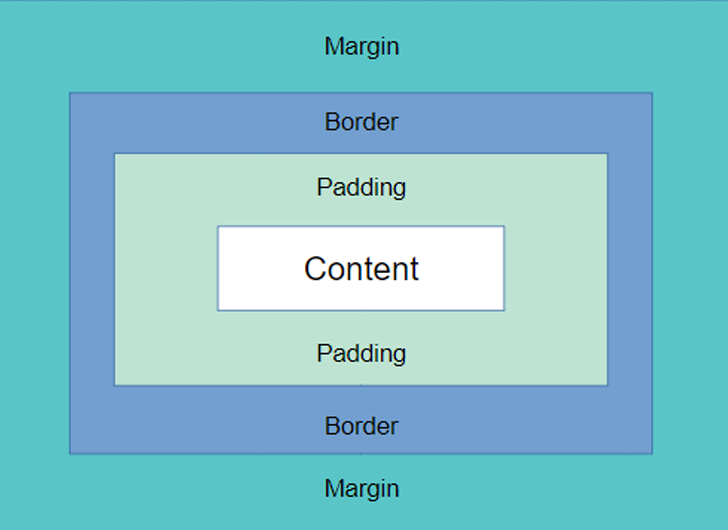

Box Model
O Box Model e a composicao de todos elementos que estao a volta de um conteudo, todo box model contem 4 partes:

Calculo de dimensoes de elementos
Total horizontal (X) = width + padding-left + padding-right +
border-left + border-right + margin left + margin-right
Total vertical (Y) = height + padding-top + padding-bottom +
border-top + border-bottom + margin-top + margin-bottom